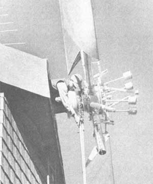
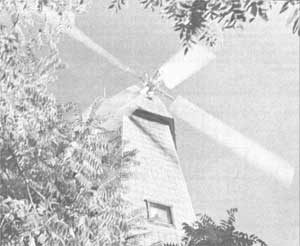

Devon Tassen's interest in alternative forms of energy took a practical and beautiful form when he decided to ...
The small town of Millville, California-located about 12 miles east of Redding-is downright "rooster" proud of this beautiful new "windplant house" . . . which was designed, built, and is being lived in by the village's volunteer fire chief, Devon Tassen.
Tassen (who has followed developments in wind, water, and solar power for years) admits that a small hydroplant would have been his first choice for a personal source of electricity. Unfortunately, streams and rivers are in short supply in the Millville area. So, in 1973, the fire chief looked to the sky and began to design a home-in the old "Dutch Windmill" tradition-that would incorporate modern aerodynamic principles.
It took the amateur architect over a year to plan his dwelling, and he finally began construction in September of 1974. The house, which is now completed, became a five-story structure with a total of 1,300 square feet of floor area.
Of course, the tall and narrow layout of Devon's home has necessitated some rather unusual use of that space.
Each story, in effect, serves one purpose. The ground level is the living room, the second floor houses a bedroom, bath, and utility closet . . . and so on. However, the real "heart" of the wind-powered home is the fifth level turret room, which contains a 1,800-pound, 40-kilowatt synchronous generator and the automatic system that Tassen designed to turn the turret itself ... in order to keep the giant blades facing into the wind.
Devon's generator is actually capable of producing 300 horsepower in a 40-mile-perhour gale, but a seven-or eight-MPH breeze is sufficient to generate all the power the family requires.
The fire chief finished his house in the summer of 1976, and-so far-the remarkable home powerplant has "worked just fine, thank you". And the cost of the project (excluding that of the house itself) was kept to $8,000 through the use of many recycled parts and materials. Of course, it won't take long for the system to pay for itself either . . . now that Tassen's electric bills are ''gone with the wind"!
|
 |
 |
|